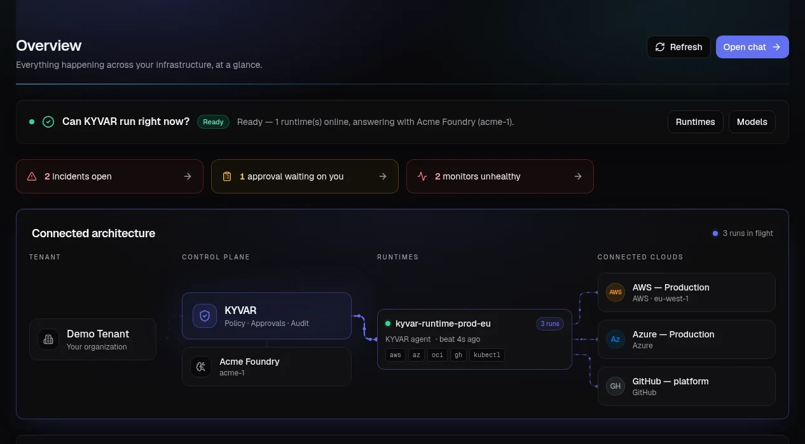
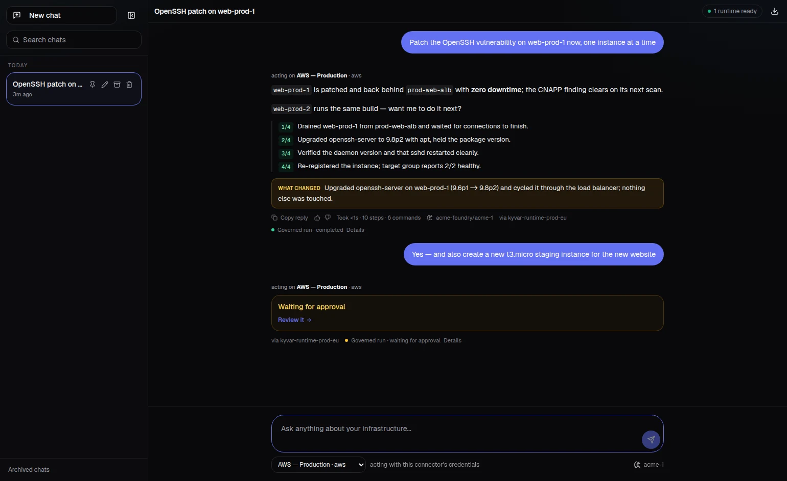
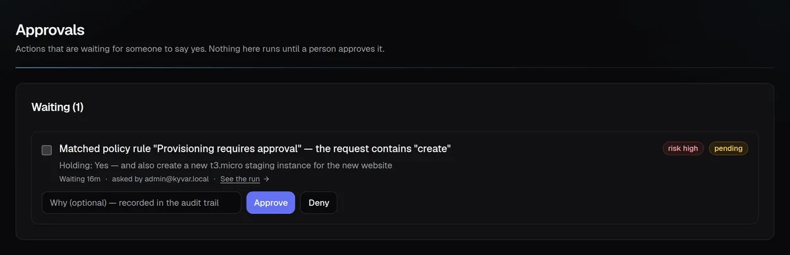
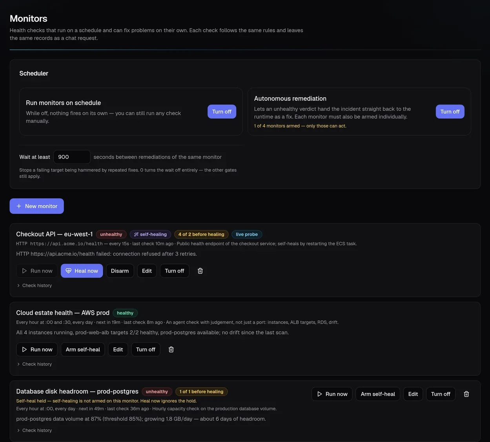
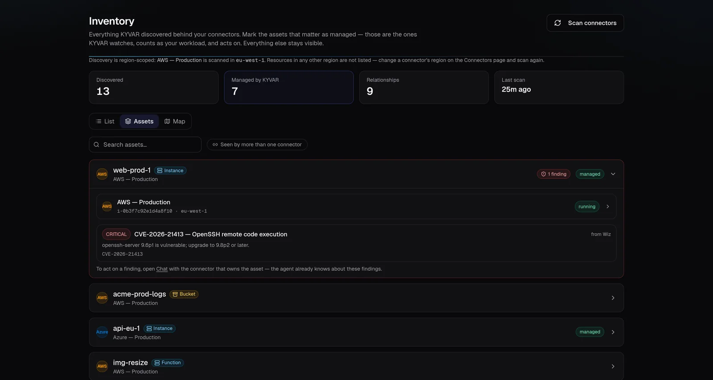

Let AI operate infrastructure.
Keep humans in control.
KYVAR is the governance plane for autonomous IT operations: one controlled path from human intent to approved execution, validation, audit and self-healing — across cloud and on-prem.
Seven gates between intent and change.
Every meaningful action travels the same governed pipeline. Nothing skips a step, and every step leaves evidence.
Governance you can see.
The KYVAR console makes every decision visible — what was asked, what policy said, who approved, what ran, and what proved the fix.



From idea to infrastructure.
Ask for the outcome in plain language. KYVAR plans the change, classifies the risk, parks it on a human approval when policy says so — and what lands is exactly what was approved, with the evidence to prove it.
Detect. Heal. Prove it.
Automatic monitoring and self-healing run as one governed loop. Down at 03:14, diagnosed, remediated and re-verified — with a human woken only when policy wants one.

Every source. One asset.
KYVAR discovers what lives behind every connector and links the rows that are the same real machine — matched on hard evidence, never a guess dressed as a fact. A security finding from one tool lands on the asset another cloud runs, and the fix flows through the connector that owns it.

The numbers behind the platform.
Linux, Windows, AWS, Azure, OCI, VMware, Terraform, Kubernetes, Docker and Entra ID — infrastructure and identity reach through one governed pipeline.
Operational access structured from viewer to platform administration — least privilege as a default, not a configuration project.
Continuous coverage across gates, tenancy, credentials and abuse cases — the safety envelope is tested like the product it is.
Autonomy with a safety envelope.
Every meaningful action travels through a control plane built to say “not yet” when it should. Your own cloud permissions decide what you can do — an admin can do everything, the person who owns the websites acts exactly where they were granted.
Not a chatbot over your cloud.
Chat assistants suggest commands. KYVAR executes them — inside a policy engine, an approval gate and a full audit trail. The autonomy is the product; the governance is the architecture.
Discovery, monitoring, self-healing, provisioning and multi-step workflows share one control plane and one evidence trail — not five tools stitched by webhooks.
Execution happens on runtimes inside your network, with credentials that never leave it. Cloud, on-prem, air-gapped-friendly by design.
Where your work actually lives.
KYVAR operates across cloud, on-prem and delivery systems through governed runtimes that return evidence, not just status. The control plane decides what may happen; runtimes execute close to the target.
Autonomous IT, defined.
What is autonomous IT?
Autonomous IT means AI agents operating your infrastructure — provisioning, monitoring, diagnosing and fixing — instead of only alerting a human to do it. KYVAR's position: autonomy is only usable in production when it is governed, with RBAC, risk policy, human approval gates and a full audit trail around every action.
What is self-healing infrastructure?
Self-healing infrastructure detects a failure, diagnoses the cause, applies a bounded remediation and then re-verifies real health — closing the loop without waiting for a human. In KYVAR, every heal runs behind thresholds, cooldowns and approvals, and leaves evidence that the fix worked.
What are Day 0 and Day 2 operations?
Day 0 is building: turning intent into provisioned infrastructure. Day 2 is everything after go-live: monitoring, incident response, patching and recovery. Most tools cover one; KYVAR runs both through the same governed pipeline, so the way you build is also the way you operate.
How is KYVAR's automatic monitoring different from a monitoring tool?
Classic monitoring ends at an alert. KYVAR's monitors are allowed to act: an unhealthy verdict can hand the incident straight to a governed remediation — armed per monitor, off by default, with the same approvals and audit as any human-requested change.
One real workload. 30–60 days.
Evidence you can trust.
A focused pilot gives operations, security and leadership measurable automation, explicit control, and a complete action trail.